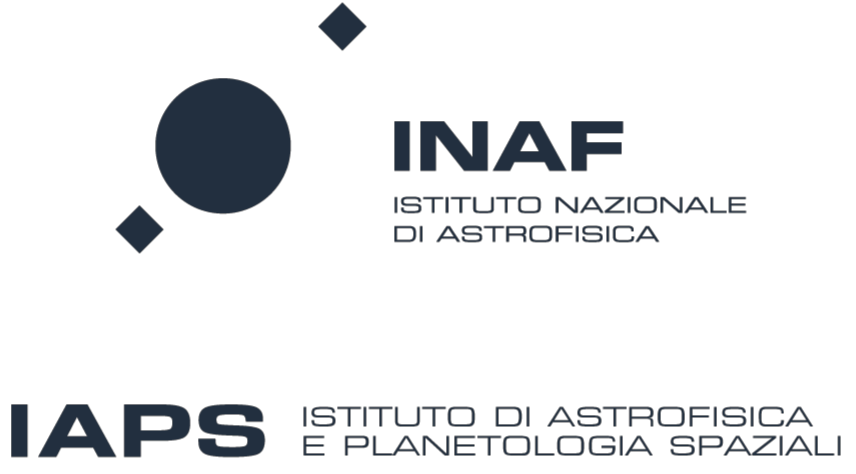

Contatti
Email
martina.cardillo@inaf.it
Istituto
INAF /
IAPS
Via del Fosso del Cavaliere 100, 00133 Roma
ORCID
0000-0001-8877-3996
LinkedIn
linkedin.com/in/martina-cardillo
Martina Cardillo
Ricercatrice INAF-IAPS | Astrofisica delle alte energie
Ciao! Sono Martina: faccio parlare i raggi gamma quando nessuno li invita alla festa.
Attivit?? di ricerca

Formazione ed esperienza
Richieste di tesi e dottorato
Dal 2023 sono supervisor dello studente Alan Sunny.
Sono disponibile a supervisionare tesi triennali/magistrali e dottorati su analisi dati gamma.
Canali Social